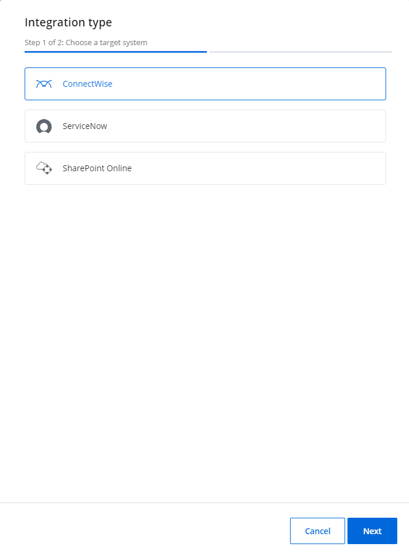

ConnectWise
ConnectWise is a flexible platform for Managed Service Providers that provides integrated services. Integrated with Netwrix 1Secure, ConnectWise allows to deliver an alert as a ticket for help desk or tech services. In ConnectWise, you can create a Company and match with the Organization in Netwrix 1Secure. The tickets are delivered under the name of that company.
Image keys:
| Icon | Description |
|---|---|
| Edit Icon. Click the Edit Icon to edit the settings of the integration type. | |
 |
ConnectWise Icon. Click the ConnectWise icon to make the settings for the ConnectWise. |
 |
Bin Icon. Click the Bin icon to delete the ConnectWise integration |
Add a ConnectWise Company in a System
Follow the steps to add a ConnectWise company in Netwrix 1Secure.
Go to Configuration > Integrations and click the Add icon to add the ConnectWise company.
Click ConnectWise and then click Next.
In the Configure Connection window, enter information in the required fields.
First, you need to configure your account at https://www.connectwise.com/. See the ConnectWise Help/FAQs page for additional information.
- Company URL – Enter when setting the public keys for the company at https://www.connectwise.com/
- Company ID – Company ID at https://www.connectwise.com/
- Pubic key – Public key you specify at https://www.connectwise.com/
- Private key – Private key you specify at https://www.connectwise.com/
Click Finish.
The ConnectWise company is added now. The status displays "Ok" in green.
Use the Edit icon or the Bin icon to edit or delete the integration.
Manage Delivery Settings
After adding your ConnectWise company, you can link it to your organization and manage delivery settings.
Also, when you add a new organization, you can specify your ConnectWise company from the start. See the Add Organizations topic for additional information.
Follow the steps to manage delivery settings for ConnectWise.
Navigate to Configuration > Alerts.
Click the ConnectWise icon under the Delivery Settings. The ConnectWise Delivery Settings pane is displayed.
Toggle on the Enabled button to enable the ConnectWise delivery.
Set the default priority of raised tickets.
Provide the corresponding ConnectWise Company ID for the required organization.
Click Save.
ConnectionWise delivery settings are configured.
ConnectWise Manage Permissions
{{ no such element: dict object['CompanyName'] }} has built a ready-to-use add-on that automates incident management, automatically creating service tickets for security alerts triggered by Netwrix 1Secure.
The add-on connects to the latest version of the ConnectWise Manage application by default. To connect to ConnectWise Manage via its REST API, you must have an API Member account, which is required to log in to ConnectWise Manage. See this article for additional information.
It is recommended to assign the API Member account to a limited security role with the following permissions:
- System – Table Setup – Inquire Level = All
- Companies – Company Maintenance – Add(all), Inquire(all)
- Companies – Manage Attachments – Add(all), Inquire(all)
- Service Desk – Service Tickets – Add(all), Inquire(all)